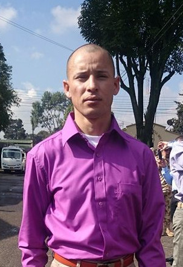

Resolver primero
Entender la necesidad antes de elegir la tecnología.
DISPONIBLE PARA CREAR Y COLABORAR
Soy Kike, desarrollador de software. Diseño y construyo soluciones digitales enfocadas en resolver problemas reales, con código claro y una visión práctica del producto.

const developer = {
curious: true,
building: 'ideas'
};
01 / SOBRE MÍ
Me interesa entender cómo funcionan las cosas, identificar el problema de fondo y desarrollar herramientas que tengan un propósito claro. Disfruto tanto el proceso de construir como el de depurar, simplificar y mejorar.
Actualmente fortalezco mis habilidades en desarrollo de software mediante proyectos que conectan interfaces, lógica de negocio, datos y experiencia de usuario.
Conversemos sobre tecnologíaEntender la necesidad antes de elegir la tecnología.
Priorizar estructura, legibilidad y evolución del proyecto.
Aprender, probar hipótesis y ajustar con criterio.
02 / CAJA DE HERRAMIENTAS
Edita esta lista para que refleje únicamente herramientas que realmente conoces y puedes explicar en una entrevista.
03 / TRABAJO SELECCIONADO
Proyecto orientado a explorar oportunidades de inversión turística en Colombia mediante información de proyectos y contexto territorial.
Ver repositorio
Concepto de asistente personal de imagen para organizar prendas y ayudar a crear combinaciones de ropa.
Consultar proyecto
Juego móvil con modos de partida, personalización y exploración de partidas en línea.
Consultar proyectoLos proyectos se describen como trabajo en desarrollo; actualiza su estado y enlaces según lo que puedas mostrar públicamente.
04 / CONTACTO
Estoy abierto a conversar sobre proyectos, colaboración y oportunidades para seguir creciendo como desarrollador.